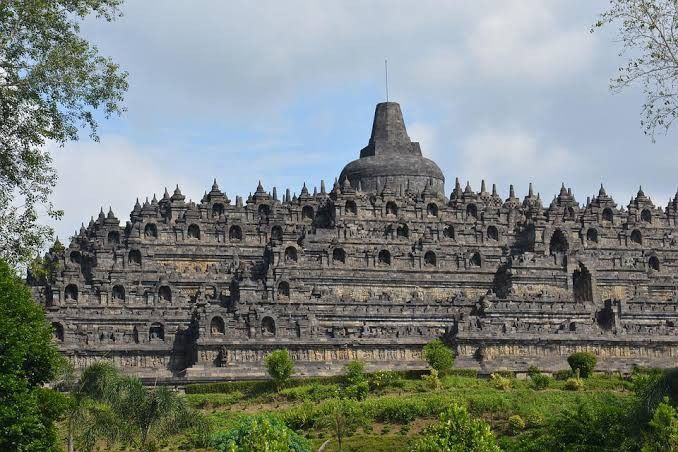
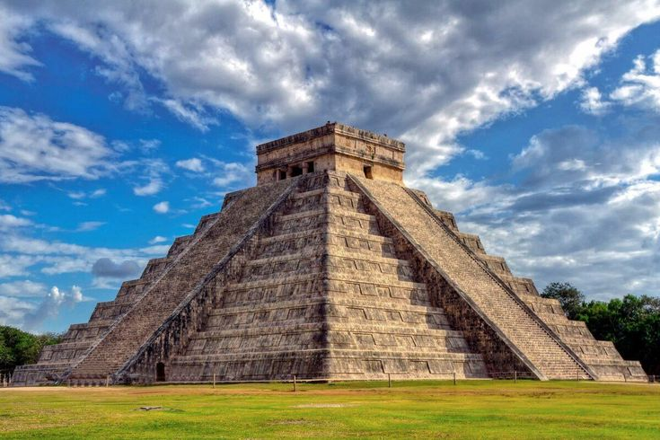
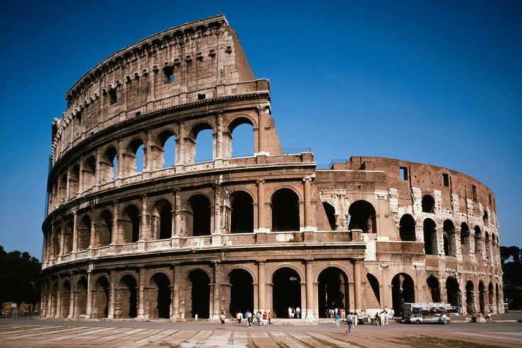
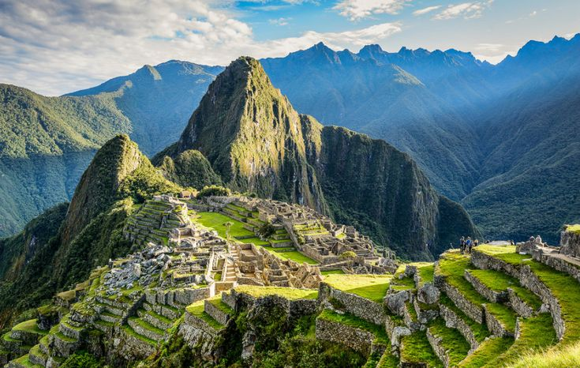
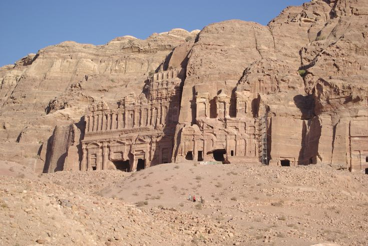
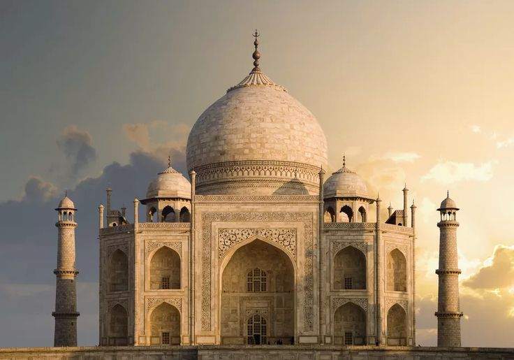
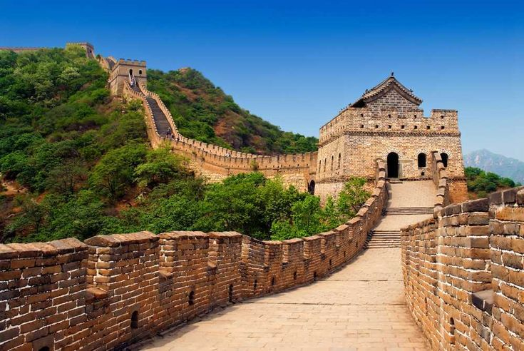

Keajaiban Dunia
Keajaiban dunia adalah istilah yang digunakan untuk menggambarkan berbagai situs, monumen, atau
struktur yang dianggap luar biasa baik dari segi arsitektur, sejarah, maupun budaya. Keajaiban
dunia ini sering kali merupakan hasil karya manusia yang menunjukkan kemajuan teknologi, seni,
dan peradaban di masa lampau atau saat ini. Berikut adalah penjelasan lebih rinci mengenai
berbagai kategori keajaiban dunia dan kali ini kita akan membahas mengenai Keajaiban
Dunia Baru
1. Candi Borobudur

Candi Borobudur adalah salah satu monumen Buddha terbesar dan paling terkenal di dunia, terletak
di Magelang, Jawa Tengah, Indonesia. Dibangun pada abad ke-9 selama pemerintahan Dinasti
Syailendra, candi ini merupakan salah satu warisan budaya terpenting di Asia Tenggara dan telah
diakui sebagai Situs Warisan Dunia UNESCO sejak tahun 1991.
2. Chicceni Itza

Chichen Itza adalah situs arkeologi Maya yang terletak di Semenanjung Yucatán, Meksiko. Sebagai
salah satu kota terbesar dan paling penting dalam peradaban Maya, Chichen Itza memainkan peran
utama dalam sejarah dan budaya wilayah tersebut. Pada tahun 2007, Chichen Itza diakui sebagai
salah satu dari Tujuh Keajaiban Dunia Baru, yang semakin mengukuhkan statusnya sebagai destinasi
wisata dan penelitian yang signifikan.
3. Colosseum

Colosseum, juga dikenal sebagai Amphitheatrum Flavium, adalah salah satu bangunan paling ikonik
dan terkenal dari peradaban Romawi Kuno. Terletak di pusat kota Roma, Italia, Colosseum
merupakan simbol kekuatan dan kemegahan Kekaisaran Romawi dan merupakan salah satu contoh
terbaik dari arsitektur Romawi yang bertahan hingga hari ini.
4. Machu Picchu

Machu Picchu adalah situs arkeologi yang terletak di pegunungan Andes di Peru, sekitar 2.430
meter di atas permukaan laut. Kota kuno ini dibangun oleh peradaban Inca pada abad ke-15 dan
merupakan salah satu simbol paling terkenal dari kekayaan budaya dan keahlian teknik bangsa
Inca. Pada tahun 1983, Machu Picchu diakui sebagai Situs Warisan Dunia UNESCO, dan pada tahun
2007, dinobatkan sebagai salah satu dari Tujuh Keajaiban Dunia Baru.
5. Petra

Petra adalah kota kuno yang terkenal di wilayah selatan Yordania. Dikenal sebagai "Kota Batu,"
Petra terkenal karena arsitektur bangunannya yang dipahat langsung dari tebing batu berwarna
merah muda. Petra menjadi pusat penting dari peradaban Nabataean dan merupakan salah satu Situs
Warisan Dunia UNESCO serta salah satu dari Tujuh Keajaiban Dunia Baru.
6. Taj Mahal

Taj Mahal adalah sebuah mausoleum marmer putih yang terletak di Agra, India. Dikenal sebagai
salah satu contoh arsitektur Mughal yang paling menakjubkan, Taj Mahal adalah simbol cinta abadi
dan karya seni yang luar biasa. Dibangun oleh Kaisar Mughal Shah Jahan untuk mengenang istri
tercintanya, Mumtaz Mahal, Taj Mahal juga merupakan Situs Warisan Dunia UNESCO dan salah satu
dari Tujuh Keajaiban Dunia Baru.
7. Tembok China

Tembok Besar China adalah salah satu monumen paling terkenal dan ikonik di dunia, yang membentang
sepanjang ribuan kilometer melintasi pegunungan, padang pasir, dan lembah di China utara.
Dibangun selama beberapa dinasti yang berbeda, terutama Dinasti Ming, Tembok Besar China adalah
salah satu pencapaian terbesar dalam sejarah teknik dan arsitektur manusia. Pada tahun 1987,
Tembok Besar China diakui sebagai Situs Warisan Dunia UNESCO dan merupakan salah satu dari Tujuh
Keajaiban Dunia Baru.